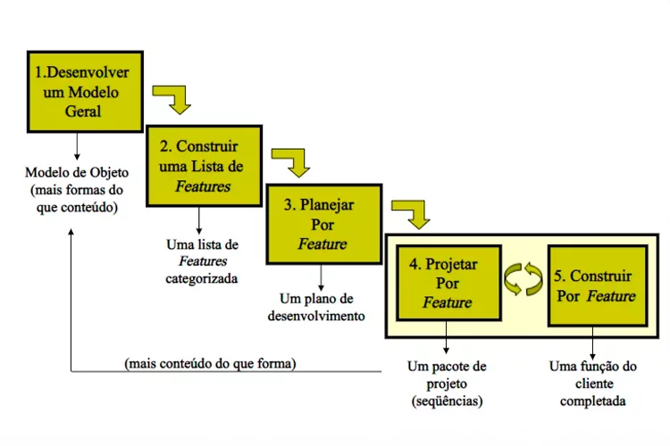

O FDD (Feature Driven Development) é uma metodologia ágil focada no desenvolvimento de funcionalidades específicas, dividindo projetos em pequenas "features" que são entregues de forma incremental. O processo é dividido em cinco etapas principais:

Componentes Humanos Envolvidos
Project Manager (Gerente de Projeto): oordena o projeto e garante que os prazos sejam cumpridos, acompanhando o progresso das features.
Chief Architect (Arquiteto-Chefe):Define a arquitetura geral do sistema e garante que as soluções técnicas estejam alinhadas com os objetivos do projeto.
Development Manager (Gerente de Desenvolvimento):Supervisiona a equipe de desenvolvimento e garante que os desenvolvedores estejam aderindo aos padrões e processos.
Class Owners (Proprietários de Classes):Desenvolvedores responsáveis por projetar e implementar classes específicas do sistema.
Domain Experts (Especialistas de Domínio):Representam o cliente ou usuários finais e fornecem feedback sobre as funcionalidades que estão sendo desenvolvidas.
Feature Teams (Equipes de Funcionalidades):Equipes multidisciplinares formadas para desenvolver uma funcionalidade específica.
Fases do Processo.
QA (Quality Assurance):Responsáveis por garantir a qualidade das features entregues, testando e validando as entregas.
Fases do Processo FDD
Desenvolvimento de um Modelo Geral:A equipe cria um modelo conceitual do sistema, colaborando com especialistas de domínio para entender as funcionalidades principais.
Construção de uma Lista de Funcionalidades:Identificam-se pequenas funcionalidades que agregam valor ao sistema. Cada funcionalidade é pequena o suficiente para ser completada em 2 semanas, mas significativa para o negócio
Planejamento por Funcionalidade:As funcionalidades são priorizadas e atribuídas às equipes de desenvolvimento. Cada feature é analisada e subdividida em tarefas menores.
Design por Funcionalidade:Cada equipe projeta a funcionalidade específica, focando no design técnico necessário para implementá-la.
Implementação por Funcionalidade:As equipes implementam as funcionalidades de maneira iterativa, entregando incrementos do software. Após a implementação, há uma fase de teste para garantir que a funcionalidade esteja de acordo com os requisitos.
Vantagens do FDD
Foco em entregas rápidas:As funcionalidades são pequenas e gerenciáveis, permitindo entregas frequentes de valor ao cliente.
Estrutura clara:O processo é bem definido, com papéis e responsabilidades claros, o que facilita a gestão de projetos complexos.
Escalabilidade:FDD é ideal para equipes maiores e projetos mais complexos, pois mantém uma organização rígida e bem estruturada.
Orientado a Resultados:Cada iteração resulta em uma funcionalidade pronta e testada, o que dá ao cliente uma visão clara do progresso.
Envolvimento do cliente:Especialistas de domínio participam ativamente do desenvolvimento, garantindo que as funcionalidades atendam às necessidades reais do negócio.
Desvantagens do FDD
Mais complexo que outras metodologias ágeis:O processo de FDD envolve mais etapas e papéis, o que pode ser considerado mais burocrático em comparação com outras metodologias ágeis mais flexíveis, como Scrum.
Dependência de especialistas de domínio:A presença contínua de especialistas de domínio é crítica, e a falta de disponibilidade desses profissionais pode impactar o andamento do projeto.
Menos flexível para mudanças rápidas:Embora seja ágil, o FDD não é tão flexível quanto outras abordagens ágeis. Modificações no escopo ou requisitos podem ser mais difíceis de gerenciar.
Adequado para projetos grandes:Para projetos pequenos, a estrutura formal e os processos do FDD podem ser excessivos.
Conclusão
O FDD é uma metodologia ágil bem adequada para projetos grandes e complexos, com equipes maiores, que necessitam de um equilíbrio entre a entrega rápida de funcionalidades e uma estrutura robusta de desenvolvimento.